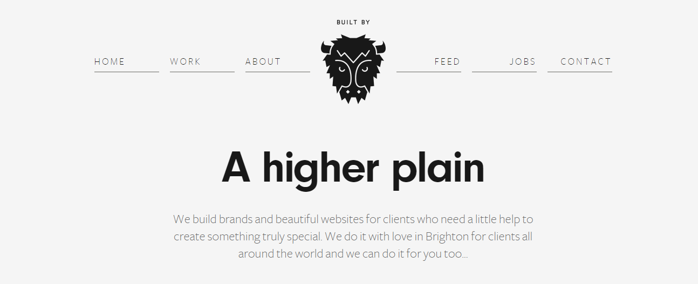

HOME RESEARCH BLOG CURRICULUM VITAE CONTACT US
Scroll for more!
For the research, We had to look at atleast five different website as reference and compare our website with them. We had to look into peculiar web components that are included in our website
Website that were found:
This page was chosen, Built By Buffalo has a beautiful homepage, from this page I got an idea for my home page and did the programming
the page on the left is of built by buffalo and on the right is the hompage created for my portfolio.
The second page was chosen, Woven Magazine has beautiful illustration and web color, I liked how the image was placed and text in between, from this page I got an idea for my Contact Us page and did the programming
The page on the left is built by Woven Magazine and on the right is the Contact page created for my portfolio.
The Third page to be chosen is MASSTRAFFIC, It has beautiful web color and illustration, I liked how the Scrolling was done so smoothly, from this page I got an idea for my Contact Us page and did the programming
The page on the left is built by mass traffic and on the right is the Contact page created for my portfolio.
The third page was chosen, W3 Schools has beautiful illustration and web color,This website helped me to display time and date. I had no idea about putting date in my website. So W3 school helped me to get idea of inserting date and time in my webpages. This website helped me to use something new in my webpages.
The page on the left is built by W3schools and on the right is the Contact page created for my portfolio.
This website helped me alot in the layout of my contact form. I added some new text field to make more attractive. This website made me clear about making a form. Create Your First Form. We need to Customize our Form Fields.Then we Check Notification Settings.After that we Embed our Simple Contact Form in a Page.
The page on the left is built by Childsown and on the right is the Contact page created for my portfolio.